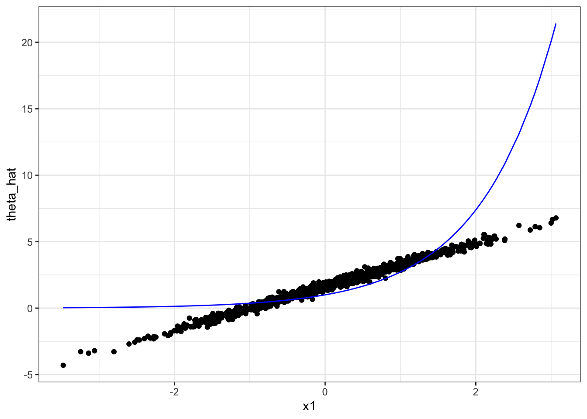

library(reticulate)
use_virtualenv("ml-learning")22 Treatment Effect Estimation
This chapter presents CATE estimation using the econml package (Keith Battocchi 2019). The causalml package by Uber (Chen et al. 2020) is less complete than econml at the moment, and we do not cover it.
22.1 Average Treatment Effect
DoubleML
22.2 X-, S-, and T-learner
22.3 R-learner
We saw a general R-learner framework for CATE estimation. We now look at an example of Linear DML, which uses a linear model at the final stage. So, we are assuming that \(\theta(X)\) can be written as follows in Equation 12.1:
\[ \begin{aligned} \theta(X) = \alpha + \beta_1 x_1 + \beta_2 x_2 + \dots + \beta_k x_k \end{aligned} \]
where \(x_1\) through \(x_k\) are the drivers of heterogeneity in treatment effects and \(\beta_1\) through \(\beta_k\) are their coefficients.
We use both Python and R for this demonstration. So, let’s set things up for that.
For this demonstration, we use synthetic data according to the following data generating process:
\[ \begin{aligned} y_i = exp(x_{i,1}) d_i + x_{i,1} + \frac{1}{4}\cdot\frac{exp(x_{i,3})}{1 + exp(x_{i,3})} + \mu_i \\ d_i = \frac{exp(x_{i,1})}{1 + exp(x_{i,1})} + \frac{1}{4}\cdot x_{i,3}+ \eta_i \end{aligned} \]
Note that this is the same data generating process used in Chapter 11 except that the impact of the treatment (\(d\)) now depends on \(x_1\). We can use gen_data() function that is defined in Section 11.1.2.
#=== sample size ===#
N <- 1000
#=== generate data ===#
synth_data <-
gen_data(
te_formula = formula(~ I(exp(x1)*d)),
n_obs = N *2
)
X <- dplyr::select(synth_data, starts_with("x")) %>% as.matrix()
y <- synth_data[, y]
d <- synth_data[, d]We now split the data into training and test datasets.
from sklearn.model_selection import train_test_split
X_train, X_test, y_train, y_test, d_train, d_test = train_test_split(r.X, r.y, r.d, test_size = 0.5, random_state = 8923)Here, to train a linear DML model, we use the Python econml package, which offers one of the most comprehensive sets of off-the-shelf R-learner (DML) methods (Keith Battocchi 2019). We can use the DML class to implement linear DML.
from econml.dml import DMLDML is a child class of _Rlearner, which is a private class. The DML class has several child classes: LinearDML, SpatseLinearDML, NonParamDML, and CausalForestDML.
As we saw above in Section 12.4.2, we need to specify three models:
model_y: model for estimating \(E[Y|X,W]\)model_t: model for estimating \(E[T|X,W]\)model_final: model for estimating \(\theta(X)\)
In this example, let’s use gradient boosting regression for both model_y and model_t and use lasso with cross-validation for model_final. Let’s import GradientBoostingRegressor() and LassoCV() from the scikitlearn package.
from sklearn.ensemble import GradientBoostingRegressor
from sklearn.linear_model import LassoCVWe can now set up our DML framework like below:
est = DML(
model_y = GradientBoostingRegressor(),
model_t = GradientBoostingRegressor(),
model_final = LassoCV(fit_intercept = False)
)Note that no training has happened yet at this point. We simply created a recipe. Once we provide ingredients (data), we can cook (train) with the fit() method.
est.fit(y_train, d_train, X = X_train, W = X_train)- first argument: dependent variable
- second argument: treatment variable
X: variables that drive treatment effect heterogeneityW: variables that affect the dependent variable directly
Here, we set X = W.
Once, the training is done. We can use the effect() method to predict \(\theta(X)\).
te_test = est.effect(X_test)Figure 22.1 presents the estimated and true marginal treatment effect (\(\theta(X)\)) as a function of x1.
plot_data <-
data.table(
x1 = py$X_test[, 1],
te = py$te_test
)
ggplot(plot_data) +
geom_point(aes(y = te, x = x1)) +
geom_line(aes(y = exp(x1), x = x1), color = "blue") +
theme_bw()
Since we forced \(\theta(X)\) to be linear in x1, it is not surprising that the estimated MTE looks linear in x1 even though the true MTE is an exponential function of x1. In the next chapter (?sec-forest-cate), we discuss CATE estimators based on forest, which estimates \(\theta(X)\) non-parametrically, relaxing the assumption of \(\theta(X)\) being linear-in-parameter.
22.4 Causal Forest
22.5 Orthogonal Forest
Chen, Huigang, Totte Harinen, Jeong-Yoon Lee, Mike Yung, and Zhenyu Zhao. 2020. “CausalML: Python Package for Causal Machine Learning.” https://arxiv.org/abs/2002.11631.
Keith Battocchi, Maggie Hei, Eleanor Dillon. 2019. “EconML: A Python Package for ML-Based Heterogeneous Treatment Effects Estimation.” https://github.com/microsoft/EconML.